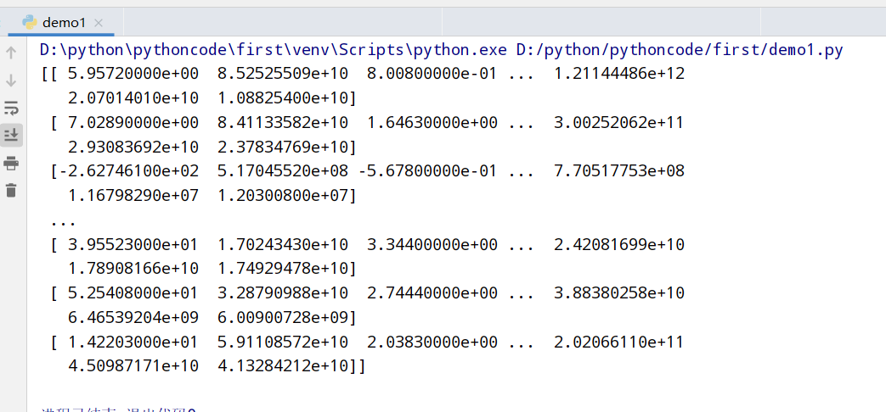
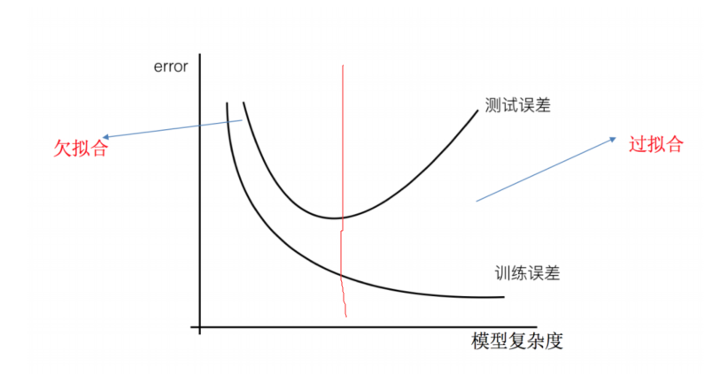
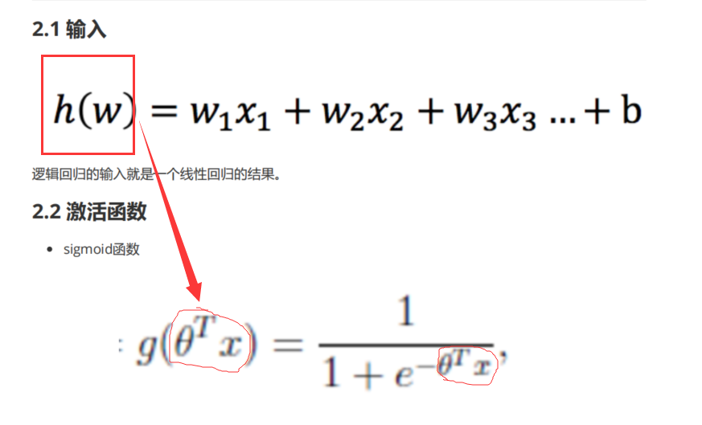
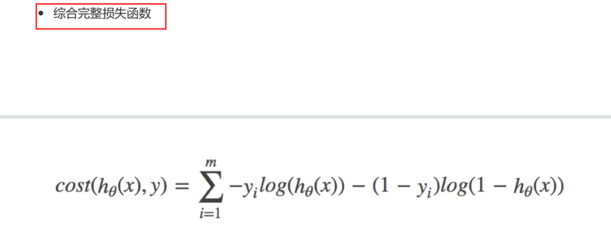

机器学习计划 学习思路 1 2 3 4 5 6 1.用书 西瓜书(机器学习) python机器学习(蜥蜴书) 2.视频 b站浙大教授带你全面解读机器学习西瓜书！ 黑马程序员3天机器学习入门
参考视频pdf文件 参考笔记
机器学习简介 相关关系
应用领域 1 2 3 4 1.传统预测:店铺销量预测/量化投资/广告推荐/企业客户分类/sql语句安全监测分类 2.图像识别:人脸识别/街道交通标志检测 3.自然语言处理:文本分类/情感分析/自动聊天
相关概念 数据集(特征值+目标值)
常见三类问题 1 2 3 1.**分类问题**:给一堆小猫小狗 --> 分类是小狗还是小猫 2.**回归问题**:给一堆房价和地理位置等信息 --> 得到连续的房价数据 3.**聚类问题**:给一堆属性信息 --> 合成在一起
算法分类 1 2 3 4 5 1.监督学习(**预测**):输入数据有特征有标签(有标准答案)---分类和回归 1.1 分类： k-近邻算法/贝叶斯分类/决策树与随机森林/逻辑回归/神经网络 1.2 回归: 线性回归/岭回归 2.无监督学习:输入数据有特征无标签(无标准答案)---聚类 2.1 聚类： k-means
开发流程
特征工程 数据集 可用数据集 1 2 3 4 5 6 7 8 9 10 11 12 1. Kaggle:https://www.kaggle.com/datasets 1.1 数据量巨大 1.2 真实数据 1.3 80万科学家 1.4 大数据竞赛平台 2. UCI：http://archive.ics.uci.edu/ml/ 2.1 数据量几十万 2.2 涵盖科学/生活/经济等领域 2.3 收录360个数据集 3. scikit-learn：https://scikit-learn.org/stable/ 3.1 数据量较小 3.2 方便学习
sklearn数据集 sklearn数据集内容 1 2 3 1.分类/聚类/回归 2.特征工程 3.模型选择/调优
sklearn获取流行数据集(datasets) 1 2 3 4 5 1.sklearn.datasets --- 加载获取流行数据集 1.1 datasets.load_*() ---获取小规模数据集 数据包含在datasets里 1.2 datasets.fetch_*(data_home=None) ---获取大规模数据集 需要从网络上下载，函数的第一个参数是data_home，表示数据集下载的目录,默认是 ~/scikit_learn_data/
sklearn小数据集(load) 1 2 3 4 5 6 7 from sklearn import datasets iris=datasets.load_iris() print(iris) ---------------------------------- from sklearn import datasets boston=datasets.load_boston() print(boston)
sklearn大数据集(fetch) 1 2 3 from sklearn import datasets newgroup=datasets.fetch_20newsgroups() print(newgroup)
sklearn返回值(字典格式) 以鸢尾花为例(iris)
1 2 3 4 5 6 7 #load和fetch均返回数据类型是datasets.base.Bunch(字典格式) 1.data：特征数据数组(特征值) 2.target：标签数组(目标值) 3.DESCR：数据描述 4.feature_names:特征名 5.target_names:目标名
数据集划分 1 2 3 4 5 6 数据集划分： 1.训练数据: 用于训练/构建模型 2.测试数据: 用于评估模型是否有效 数据集划分比例： 训练集: 70% 80% 75% 测试集: 30% 20% 30%
数据集划分API(model_selection) 1 2 3 4 5 sklearn.model_selection.train_test_split(arrays,*option) 1.x: 特征值 2.y: 目标值 3.test_size: 测试集大小(一般是float/默认是0.25) 4.random_state: 随机数种子(相同种子采样结果相同)
使用鸢尾花数据集:
1 2 3 4 5 6 7 8 9 10 11 12 13 14 from sklearn import datasets from sklearn.model_selection import train_test_split iris=datasets.load_iris() #训练集特征值x_train #测试集特征值x_test #训练集目标值y_train #测试集目标值y_test x_train,x_test,y_train,y_test=train_test_split(iris.data,iris.target,random_state=22) #随机数种子是22 测试集大小默认是0.25 print(f"训练集特征值x_train: {x_train}") print(f"测试集特征值x_test: {x_test}") print(f"训练集目标值y_train: {y_train}") print(f"测试集目标值y_test: {y_test}")
特征工程介绍
任意数据(文本/图像) –> 数字特征(机器学习)
特征提取分类 1 2 3 1.字典特征提取(特征离散化) 2.文本特征提取 3.图像特征提取(深度学习)
字典特征提取(DictVectorizer类) 1 2 3 4 #有三个方法: 1.fit_transform(X): 输入一个字典返回稀疏矩阵 2.inverse_transform(X)： 输入一个稀疏数组/数组返回原始数据格式 3.get_feature_names()： 返回类别名称
以城市为例:
1 2 3 4 5 6 7 8 9 10 11 12 13 from sklearn.feature_extraction import DictVectorizer #对字典类型数据进行特征抽取 data = [{'city': '北京','temperature':100}, {'city': '上海','temperature':60}, {'city': '深圳','temperature':30}] #1.实例化一个转换器类 transfer=DictVectorizer(sparse=False) #sparse默认是True打开的是稀疏矩阵 #2.调用fit_transform()方法抽取特征 data_new=transfer.fit_transform(data) #获得特征名称 print(transfer.get_feature_names()) #获得特征 print(data_new) #sparse默认是True打开的是稀疏矩阵 #反转最初的数据格式 print(f"原来的数据格式是:{transfer.inverse_transform(data_new)}")
文本特征提取(CountVectorizer类统计特征词出现个数) 1 2 3 4 #有三个方法: 1.fit_transform(X): 输入一个文本/文本字符串返回稀疏矩阵 2.inverse_transform(X)： 输入一个稀疏数组/数组返回原始数据格式 3.get_feature_names()： 返回类别名称
以英文段落为例:
1 2 3 4 5 6 7 8 9 10 11 from sklearn.feature_extraction.text import CountVectorizer #准备数据 data =["life is short,i like like python", "life is too long,i dislike python"] #1.实例化一个转换器 count=CountVectorizer() #2.调用fit_transfrom()方法获取数据 data_new=count.fit_transform(data) print(count.get_feature_names_out()) #get_feature_names已经过期了！！！ #二维数组要用toarray()方法展示出来 没有sparse=False这个设置！！！ print(data_new.toarray()) print(count.inverse_transform(data_new))
文本特征提取(TfidfVectorier类+jieba库的cut方法分词) jieba库的cut方法 以中文段落为例:
1 2 3 4 5 6 7 8 9 10 11 12 13 14 15 16 from sklearn.feature_extraction.text import CountVectorizer import jieba #准备数据 data=["一种还是一种今天很残酷，明天更残酷，后天很美好，但绝对大部分是死在明天晚上，所以 每个人不要放弃今天。", "我们看到的从很远星系来的光是在几百万年之前发出的，这样当我们看到宇宙时，我们是在 看它的过去。", "如果只用一种方式了解某样事物，你就不会真正了解它。了解事物真正含义的秘密取决于如 何将其与我们所了解的事物相联系。"] #1.将中文文本分词 data_new=[] for sent in data: data_new.append(" ".join(list(jieba.cut(sent)))) #使用jieba库的cut分词方法!!! #2.调用fit_transform()方法 transfer=CountVectorizer(stop_words=["一种","哈哈"]) #禁用词--- 分词的时候不把他们当做特征词！！！ data_final=transfer.fit_transform(data_new) print(f"特征名称:\n {transfer.get_feature_names_out()}") print(f"data_new内容:\n{data_final.toarray()}")
TfidfVectorier类 1 2 3 4 5 6 1.TF-IDF思想:某个词/短语在一篇文章中出现概率高，并且在其他文章中很少出现，则认为有很好的区分度，适合用来分类 2.TF-IDF作用:用于评估对于一个文件/语料库文件的重要程度 3.TF-IDF公式: TF(词频): 词语在文件中出现频率 IDF(逆向文档频率): log[总文件数目/文件数目]10 tfidf=TF*IDF
以中文段落为例:
1 2 3 4 5 6 7 8 9 10 11 12 13 14 15 from sklearn.feature_extraction.text import TfidfVectorizer import jieba #准备数据 data=["一种还是一种今天很残酷，明天更残酷，后天很美好，但绝对大部分是死在明天晚上，所以 每个人不要放弃今天。", "我们看到的从很远星系来的光是在几百万年之前发出的，这样当我们看到宇宙时，我们是在 看它的过去。", "如果只用一种方式了解某样事物，你就不会真正了解它。了解事物真正含义的秘密取决于如 何将其与我们所了解的事物相联系。"] #1.将中文文本分词 data_new=[] for sent in data: data_new.append(" ".join(list(jieba.cut(sent)))) #2.调用fit_transform()方法 transfer=TfidfVectorizer() #禁用词--- 分词的时候不把他们当做特征词！！！ data_final=transfer.fit_transform(data_new) print(f"特征名称:\n {transfer.get_feature_names_out()}") print(f"data_new内容:\n{data_final.toarray()}")
特征预处理(sklearn.preprocessing) 1 2 3 4 特征预处理:特征数据 --(转换函数)--> 特征数据[更加适合算法模型] 特征预处理: 1.归一化(传统精确小数据场景): MinMaxScaler ----最大值最小值是变化并且容易受到异常点影响 ---> 鲁棒性较差 2.标准化(嘈杂大数据场景): StandardScaler ----
归一化(MinMaxScaler) 归一化推导公式:
1 2 3 4 5 6 7 8 9 10 11 import pandas as pd from sklearn.preprocessing import MinMaxScaler #标准化 #1.获取数据 data=pd.read_csv("dating.txt") #文档在.py文件所在目录 data=data.iloc[:,:3] print(data) #2.实例化一个转换器类 transfer=MinMaxScaler(feature_range=[0,1]) #默认归一化在0-1 #3.调用fit_transform() data_new=transfer.fit_transform(data) print(data_new)
标准化(StandardScaler) 标准化推导公式:
1 2 3 4 5 6 7 8 9 10 11 12 import pandas as pd from sklearn.preprocessing import StandardScaler #统一化 #1.获取数据 data=pd.read_csv("dating.txt") #文档在.py文件所在目录 print(data) #2.实例化一个转换器类 transfer=StandardScaler() #3.调用fit_transform() data_new=transfer.fit_transform(data[['milage','Liters','Consumtime']]) print("标准化的结果:\n", data_new) print("每一列特征的平均值：\n", transfer.mean_) print("每一列特征的方差：\n", transfer.var_)
特征降维 1 2 3 4 5 6 7 8 9 10 11 12 13 14 概念: 在某些限定条件下，降低随机变量(特征)个数 ---> 一组“不相关”主变量 分类: 1.特征选择 1.1 嵌入式 Embeded 决策树 正则化 深度学习 1.2 过滤式 Filter 方差选择法:低方差特征过滤 相关系数:特征与特征之间的相关过程 1.3 包裹式 2.主成分分析
特征选择 低方差特征过滤(varianceThreshold) 1 2 3 4 5 6 1.删除低方差的一些特征，再结合方差的大小来考虑这个方式的角度 2. API: sklearn.feature_selection.VarianceThreshold(threshold = 0.0) --删除所有低方差特征 Variance.fit_transform(X): X是numpy array格式的数据[行,列] 返回值:删除训练集差异低于threshold的特征(默认是删除所有样本中具有相同值的特征)
筛选某些股票的指标特征
1 2 3 4 5 6 7 8 9 10 import pandas as pd from sklearn.feature_selection import VarianceThreshold #1.获取数据 data=pd.read_csv("factor_returns.csv") data=data.iloc[:,1:-2] #2.实例化转换器类 transfer=VarianceThreshold(threshold=10) //特征方差选10 #3.调用fit_transform data_new=transfer.fit_transform(data) print(data_new)

相关系数过滤(scipy) 1 2 3 4 5 6 7 8 9 10 11 12 13 14 15 16 17 1.皮尔逊相关系数:反映变量之间相关关系密切程度的统计指标 相关系数(r):-1到1之间 1.1 r>0表示正相关 1.2 r<0表示负相关 1.3 |r|=1表示两变量之间完全相关 1.4 r=0表示两变量之间无相关 1.5 0<|r|<1表示两变量存在一定程度相关，且越接近1之间的线性关系越密切，接近0之间表示线性相关越弱 1.6 |r|<0.4低度相关,0.4≤|r|<0.7显著性相关,0.7≤|r|<1高度线性相关 2. from scipy.stats import pearsonr X: 特征值x, Y: 特征值y,返回值是[特征值相关,特征值] 3.特征之间相关性很高: 3.1 选其中一个 3.2 加权求和 每个占比多少 3.3 主成分分析
主成分分析(PCA降维保留信息) 1 2 3 4 5 6 7 1.API：通过矩阵运算得到一个合适的直线->主成分分析的结果 sklearn.decomposition.PCA(n_components=None) n_components： 小数:表示保留百分之多少的信息 整数:减少到多少特征 PCA.fit_transform(X是numpy array格式数据) 返回值:转换后指定维度的array
举例使用
1 2 3 4 5 6 7 8 9 from sklearn.decomposition import PCA #1.获取数据 data=[[2,8,4,5], [6,3,0,8], [5,4,9,1]] #2.实例化转换器类 transfer=PCA(n_components=2) #转换后有2个维度(2个特征) data_new=transfer.fit_transform(data) print(data_new)
instacart降维案例 问题分析
1 2 3 4 5 6 7 8 <探究用户对物品类别的喜好细分> 2.order_products_prior.csv订单与商品信息: order_id,product_id,add_to_cart_order,reordered products.csv商品信息: product_id,product_name,aisle_id,department_id orders.csv用户的订单信息: order_id,user_id,eval_set,order_number..... aisles.csv商品所属物品类别: aisle_id,aisle 2. 得到四个csv文件 ----> 需要将user_id和aisle放在同一个表中 3. 找到user_id和aisle ----> 交叉表和透视表 4. 特征冗余过多 ---->PCA降维
具体实现
1 2 3 4 5 6 7 8 9 10 11 12 13 14 15 16 17 18 19 20 import pandas as pd from sklearn.decomposition import PCA #1.获取数据(记得放在代码当前位置文件夹下) data1=pd.read_csv("order_products__prior.csv") data2=pd.read_csv("products.csv") data3=pd.read_csv("orders.csv") data4=pd.read_csv("aisles.csv") #2.合并表 merge()函数 table1=pd.merge(data4,data2,on=["aisle_id","aisle_id"]) table2=pd.merge(table1,data1,on=["product_id","product_id"]) table3=pd.merge(table2,data3,on=["order_id","order_id"]) #3.交叉表 crosstab()函数 table=pd.crosstab(table3["user_id"],table3["aisle"]) #4.PCA降维 PCA()函数 transfer=PCA(n_components=0.95) #保留百分之95的数据 data_new=transfer.fit_transform(table) #降维 print(data_new) #输出PCA降维后的数据
sklearn转换器和估计器 1 2 3 4 5 6 7 8 9 1.特征工程的步骤: 1.1 实例化(实例化的是一个转换器类(Transformer)) 1.2 调用fit_transform(对于文档简历分类词频矩阵，不能同时调用) 2.转换器:特征工程的接口 2.1 转换器的形式: 2.1.1 fit_transform 2.1.2 fit 2.1.3 transform
1 2 3 4 5 6 7 8 9 10 11 12 13 14 15 import numpy as np import pandas as pd from sklearn.preprocessing import StandardScaler #引入特征预处理中的标准化 #特征预处理 ##1.归一化(MinMaxScaler) ##2.标准化(StandardScaler) std1=StandardScaler() a=[[1,2,3],[4,5,6]] print(std1.fit_transform(a)) std2=StandardScaler() print(std2.fit(a)) print(std2.transform(a))
估计器(estimator)
1 2 3 4 5 6 7 8 9 1.估计器的步骤: 1.1 实例化一个estimator 1.2 调用estimator.fit(x_train,y_train)计算 --> 调用完毕，模型生成 1.3 模型评估: 1.3.1 直接对比真实值和预测值: y_predict=estimator.predict(x_test) y_test==y_predict 1.3.2 计算准确率: accuracy=estimator.score(x_test,y_test)
估计器的分类:
K-近邻算法(sklearn.neighbors.KNeighborsClassifier) 1 2 3 4 5 1.核心思想: 你的"邻居"来推断你的类别 2.距离公式: 欧式距离 / 明可夫斯基距离 3.API: sklearn.neighbors.KNeighborsClassifier(n_neighbors=5,algorithm='auto') 3.1 n_neighbors: (默认整数类型为5) -->通过k_neighbors查询默认使用的邻居数 3.2 algorithm: 可选用于计算最近邻居的算法[auto/ball_tree/kd_tree/brute]
模型选择与调优(sklearn.model_selection.GridSearchCV) 1 2 3 4 5 6 7 8 9 10 11 12 1.交叉验证(cross validation):为了让被评估的模型更加准确可信 1.1将拿到的训练数据更加细化: 训练集:训练集+验证集 测试集:测试集 2.超参数搜索-网格搜索(Grid Search): 2.1 超参数:有很多参数是需要手动指定的(如k-近邻算法中的K值) 2.2 API: sklearn.model_selection.GridSearchCV(estimator,param_grid=None,cv=None) 2.2.1 estimator:估计器对象 2.2.2 param_grid:估计器参数(dict) --> 一般是取字典{"n_neighbors":[1,3,5]} 2.2.3 cv:指定几折交叉验证(训练集中训练集和验证集的划分有几次，然后得出平均值) 2.2.4 fit():输入训练数据 2.2.5 score()：准确率
电影类型分析
鸢尾花分析 1 2 3 4 5 6 7 8 9 10 11 12 13 14 15 16 17 18 19 20 21 22 23 24 25 26 27 28 29 import numpy as np import pandas as pd from sklearn.preprocessing import StandardScaler #引入特征预处理中的标准化 from sklearn.datasets import load_iris from sklearn.model_selection import train_test_split from sklearn.neighbors import KNeighborsClassifier #用KNN算法对鸢尾花进行分类 #1.获取数据 iris=load_iris() #2.划分数据集 x_train,x_test,y_train,y_test=train_test_split(iris.data,iris.target,random_state=6) #3.特征工程(标准化) transfer=StandardScaler() x_train=transfer.fit_transform(x_train) x_test=transfer.transform(x_test) #4.KNN算法预估器 estimator=KNeighborsClassifier(n_neighbors=3) estimator.fit(x_train,y_train) #5.模型评估 ##方法一:直接对比真实值和预测值 y_predict=estimator.predict(x_test) print(y_test==y_predict) ##方法二:计算准确率 score=estimator.score(x_test,y_test) print("准确率为:",score)
鸢尾花分析(添加网格搜索和交叉验证) 1 2 3 4 5 6 7 8 9 10 11 12 13 14 15 16 17 18 19 20 21 22 23 24 25 26 27 28 29 30 31 32 33 34 35 36 37 38 39 40 41 import numpy as np import pandas as pd from sklearn.preprocessing import StandardScaler #引入特征预处理中的标准化 from sklearn.datasets import load_iris from sklearn.model_selection import train_test_split from sklearn.neighbors import KNeighborsClassifier from sklearn.model_selection import GridSearchCV #用KNN算法对鸢尾花进行分类 #1.获取数据 iris=load_iris() #2.划分数据集 x_train,x_test,y_train,y_test=train_test_split(iris.data,iris.target,random_state=6) #3.特征工程(标准化) transfer=StandardScaler() x_train=transfer.fit_transform(x_train) x_test=transfer.transform(x_test) #4.KNN算法预估器 estimator=KNeighborsClassifier() ##加入网格搜索和交叉验证 param_dict={"n_neighbors":[1,3,5,7,9,11]} estimator=GridSearchCV(estimator,param_grid=param_dict,cv=10) estimator.fit(x_train,y_train) #5.模型评估 ##方法一:直接对比真实值和预测值 y_predict=estimator.predict(x_test) print(y_test==y_predict) ##方法二:计算准确率 score=estimator.score(x_test,y_test) print("准确率为:",score) #6.获取结果分析 print("最佳参数:",estimator.best_params_) print("最佳结果:",estimator.best_score_) print("最佳估计器:",estimator.best_estimator_) print("交叉验证的结果:",estimator.cv_results_)
预测facebook签到位置 1 2 3 4 5 6 7 8 9 10 11 12 13 14 15 16 17 18 19 20 21 22 23 24 25 26 27 28 29 30 31 32 33 34 35 36 37 38 39 40 41 42 43 44 45 46 47 48 49 import numpy as np import pandas as pd from sklearn.preprocessing import StandardScaler #引入特征预处理中的标准化 from sklearn.datasets import load_iris from sklearn.model_selection import train_test_split from sklearn.neighbors import KNeighborsClassifier from sklearn.model_selection import GridSearchCV #Facebook预测签到位置 ##1.获取数据 data=pd.read_csv("train.csv") ##2.数据处理(获取特征值和目标值) ###2.1 缩小数据范围 2<x<2.5 1.0<y<1.5 ###2.2 改变time时间 年月日时分秒 ###2.3 过滤签到次数少的地点 data=data.query("x<2.5&x>2&y>1.0&y<1.5") time_value=pd.to_datetime(data["time"],unit="s") data=pd.DatetimeIndex(time_value) place_count=data.groupby("place_id") data_final=data[data["place_id"].isin(place_count[place_count>3].index.values)] ##3.特征工程 x=data_final[["x","y","accuracy","day","weekday","hour"]] y=data_final["place_id"] x_train,x_test,y_train,y_test=train_test_split(x,y) ##4.KNN算法预估器 estimator=KNeighborsClassifier() ###加入网格搜索和交叉验证 param_dict={"n_neighbors":[1,3,5,7,9,11]} estimator=GridSearchCV(estimator,param_grid=param_dict,cv=10) estimator.fit(x_train,y_train) ##5.模型评估 ###方法一:直接对比真实值和预测值 y_predict=estimator.predict(x_test) print(y_test==y_predict) ###方法二:计算准确率 score=estimator.score(x_test,y_test) print("准确率为:",score) ##6.获取结果分析 print("最佳参数:",estimator.best_params_) print("最佳结果:",estimator.best_score_) print("最佳估计器:",estimator.best_estimator_) print("交叉验证的结果:",estimator.cv_results_)
朴素贝叶斯算法(sklearn.naive_bayes.MultinomialNB(alpha=1.0)) 条件概率与联合概率
贝叶斯公式
拉普拉斯平滑系数(防止计算出的分类概率为0)
文本分类分析(新闻分类) 1 2 3 4 5 6 7 8 9 10 11 12 13 14 15 16 17 18 19 20 21 22 23 24 25 26 27 28 29 import numpy as np import pandas as pd from sklearn.preprocessing import StandardScaler #引入特征预处理中的标准化 from sklearn.model_selection import train_test_split from sklearn.neighbors import KNeighborsClassifier from sklearn.model_selection import GridSearchCV from sklearn.naive_bayes import MultinomialNB from sklearn.datasets import fetch_20newsgroups #引入新闻数据集 from sklearn.feature_extraction.text import TfidfVectorizer #文本提取的库 #1.获取数据 news=fetch_20newsgroups(subset="all") #2.划分数据集 x_train,x_test,y_train,y_test=train_test_split(news.data,news.target) #3.特征工程 transfer=TfidfVectorizer() ##3.1文本特征提取 x_train=transfer.fit_transform(x_train) x_test=transfer.transform(x_test) #4.朴素贝叶斯预估器流程 estimator=MultinomialNB() estimator.fit(x_train,y_train) #5.模型评估 ##方法一:直接对比真实值和预测值 y_predict=estimator.predict(x_test) print(y_test==y_predict) ##方法二:计算准确率 score=estimator.score(x_test,y_test) print("准确率为:",score)
决策树(sklearn.tree.DecisionTreeClassifier) 信息论基础
1 2 3 4 5 6 1.信息: 香农:消除随机不定性的东西 例:小明 年龄未知 "我今年18岁了" (我可以通过说的这句话推断出年龄，消除了不知道的年龄)--就是信息 小华 "小明明年19岁" (因为小明的话已经推断出年龄，所以这句话不算消除) --不是信息 2.信息的衡量(信息商/信息熵) 3.信息增益[g(D,A)]=信息熵[H(D)]-条件熵[H(D|A)]
决策树划分依据(3种) 1 2 3 1. ID3 信息增益(最大的准则) 2. C4.5 信息增益比(最大的准则) 3. CART 分类树:基尼系数(最小的准则) 在sklearn中可以选择划分的默认原则
决策树的实现 1 2 3 4 5 sklearn.tree.DecisionTreeClassifier(criterion='gini',max_depth=None,random_state=None) 1.决策树分类器 2.criterion: 默认是gini系数(也可以选择信息增益的熵entropy) 3.2. 4.random_state: 随机数种子
鸢尾花预测 1 2 3 4 5 6 7 8 9 10 11 12 13 14 15 16 17 18 19 20 21 import numpy as np import pandas as pd from sklearn.preprocessing import StandardScaler #引入特征预处理中的标准化 from sklearn.model_selection import train_test_split from sklearn.feature_extraction.text import TfidfVectorizer #文本提取的库 from sklearn.tree import DecisionTreeClassifier #决策树 from sklearn.datasets import load_iris #传入鸢尾花数据集 #1.获取数据 iris=load_iris() #2.划分数据集 x_train,x_test,y_train,y_test=train_test_split(iris.data,iris.target,random_state=22) #4.决策树预估器流程 estimator=DecisionTreeClassifier(criterion='entropy') #设置为数据增益 estimator.fit(x_train,y_train) #5.模型评估 ##方法一:直接对比真实值和预测值 y_predict=estimator.predict(x_test) print(y_test==y_predict) ##方法二:计算准确率 score=estimator.score(x_test,y_test) print("准确率为:",score)
决策树可视化(sklearn.tree.export_graphviz()导出DOT格式) 1 2 3 4 5 6 7 sklearn.tree.export_graphviz()该函数能够导出DOT格式 1.决策树可视化 2.estimator: 预估器对象 3.out_file: 输出名称 4.feature_names:特征的名字 得到dot文件之后复制内容去http://webgraphviz.com/执行
泰坦尼克号乘客生存预测 1 2 3 4 5 6 7 8 9 10 11 12 13 14 15 16 17 18 19 20 21 22 23 24 25 import numpy as np import pandas as pd from sklearn.preprocessing import StandardScaler #引入特征预处理中的标准化 from sklearn.model_selection import train_test_split from sklearn.feature_extraction import DictVectorizer #缺失值处理 from sklearn.feature_extraction.text import TfidfVectorizer #文本提取的库 from sklearn.tree import DecisionTreeClassifier #决策树 from sklearn.tree import export_graphviz #决策树可视化 #1.获取数据 titanic=pd.read_csv('http://biostat.mc.vanderbilt.edu/wiki/pub/Main/DataSets/titanic.txt') ##1.1数据处理 x=titanic[['pclass','age','sex']] y=titanic['survived'] ##1.2缺失值处理(将特征当中有类别的特征进行字典特征抽取) x['age'].fillna(x['age'].mean(),inplace=True) dict=DictVectorizer(sparse=False) x=dict.fit_transform(x.to_dict(orient="records")) #2.划分数据集 x_train,x_test,y_train,y_test=train_test_split(x,y,test_size=0.3) #3.决策树预估器流程 estimator=DecisionTreeClassifier(max_depth=5) #设置为数据增益 estimator.fit(x_train,y_train) #4.模型评估 score=estimator.score(x_test,y_test) print("准确率为:",score)
随机森林(sklearn.ensemble.RandomForestClassifier)
1 2 3 4 5 6 7 8 9 10 11 12 13 1.随机森林: 一个包含多个决策树的分类器(输出的类型是通过个别树输出的类别的众数决定) 2.随机: 2.1 训练集随机: bootstrap随机有放回抽样 2.2 特征随机: 从M个特征中随机抽取m个特征(很像降维) 3.API: sklearn.ensemble.RandomForestClassifier 3.1 随机森林分类器 3.2 n_estimators: 几个估计器 3.3 criterion: 默认gini系数，(也可以使用信息增益的熵entropy) 3.4 max_depth: 树的深度 3.5 bootstrap: 是否设置随机有放回抽样 3.6 random_state: 3.7 min_samples_split:
回归问题 线性回归 线性回归定义 1 2 3 4 5 6 7 8 9 1.基本概念:通过回归方程(函数)对一个/多个自变量(特征值)和因变量(目标值)之间关系进行建模的一种分析方式 2.线性模型(回归方程):特征值和目标值之间建立一个关系 3.线性模型分类: 3.1 线性关系 3.1.1 直线关系: 单特征与目标值的关系 3.1.2 平面关系: 两个特征与目标值的关系 3.2 非线性关系 3.2.1 自变量一次: y=ax1+bx2+cx3+....+b (最多是x的一次方) 3.2.2 参数一次: y=ax1+bx2^2+cx3^3+...+b (a1/b/c等等都是一次)
线性回归通用公式:
最小二乘法(损失函数) 最小二乘法公式:
优化方法之正规方程(直接求解sklearn.linear_model.LinearRegression)
1 2 3 4 sklearn.linear_model.LinearRegression(fit_intercept=True) 1.fit_intercept: 是否计算偏置 2.LinearRegression.coef_: 回归系数 3.LinearRegression.intercept_: 偏置
优化方法之梯度下降(不断试错sklearn.linear_model.SGDRegressor)
1 2 3 4 5 6 7 8 9 10 sklearn.linear_model.SGDRegressor(loss="squared_loss",fit_intercept=True,learing_rate='invscaling',eta0=0.01) 1.SGDRegressor类实现了随机梯度下降学习(支持不同的loss函数和正则化惩罚项来拟合线性回归模型) 2.loss: 默认是普通最小二乘法squared_loss 3.fit_intercept: 是否计算偏置 4.learing_rate: 学习率填充 4.1 constant(常数值的学习率): eta=eta0 4.2 optimal(默认): eta=1.0/(alpha=*(t+t0)) 4.3 invscaling: eta=eta0/pow(t,power_t) [power_t=0.25存在父类当中] 4.4 SGDRegressor.coef_: 回归系数 4.5 SGDRegressor.intercept_: 偏置
波士顿房价预测(正规方程和梯度下降对比) 正则方程 1 2 3 4 5 6 7 8 9 10 11 12 13 14 15 16 17 18 19 20 import numpy as np import pandas as pd from sklearn.datasets import load_boston #导入波士顿数据集 from sklearn.model_selection import train_test_split #划分数据集 from sklearn.preprocessing import StandardScaler from sklearn.linear_model import LinearRegression #1.获取数据集 boston=load_boston() #2.划分数据集 x_train,x_test,y_train,y_test=train_test_split(boston.data,boston.target,random_state=22) #3.标准化 transfer=StandardScaler() x_train=transfer.fit_transform(x_train) #训练集 x_test=transfer.transform(x_test) #测试集 #4.决策树预估器流程 estimator=LinearRegression() estimator.fit(x_train,y_train) ##得出模型 print("权重系数为:",estimator.coef_) print("偏置为:",estimator.intercept_)
梯度下降 1 2 3 4 5 6 7 8 9 10 11 12 13 14 15 16 17 18 19 20 import numpy as np import pandas as pd from sklearn.datasets import load_boston #导入波士顿数据集 from sklearn.model_selection import train_test_split #划分数据集 from sklearn.preprocessing import StandardScaler from sklearn.linear_model.stochastic_gradient import SGDRegressor #1.获取数据集 boston=load_boston() #2.划分数据集 x_train,x_test,y_train,y_test=train_test_split(boston.data,boston.target,random_state=22) #3.标准化 transfer=StandardScaler() x_train=transfer.fit_transform(x_train) #训练集 x_test=transfer.transform(x_test) #测试集 #4.决策树预估器流程 estimator=SGDRegressor() estimator.fit(x_train,y_train) ##得出模型 print("权重系数为:",estimator.coef_) print("偏置为:",estimator.intercept_)
两者对比
回归性能评估(sklearn.metrics.mean_squared_error) 回归性能评估公式:
1 2 3 4 5 6 7 8 9 10 11 12 1.API: sklearn.metrics.mean_squared_error(y_true,y_pred) 1.1 均方误差回归损失 1.2 y_true: 真实值 1.3 y_pred: 预测值 #在之前的基础上: from sklearn.metrics import mean_squared_error #5.模型评估 y_predict=estimator.predict(x_test) print("预测房价:",y_predict) error=mean_squared_error(y_test,y_predict) print("梯度下降的-均方误差为:",error)
刚才的波士顿房价上进行预测:
梯度下降优化方法(GD/SGD/SAG) 1 2 3 4 5 1.GD(原始的):计算所有样本的值才能够得到梯度(计算量大) 2.SGD(随机梯度下降):一次迭代只考虑一个训练样本 3.SAG(随机平均梯度法):提高收敛速度(SGDRegressor和岭回归以及逻辑回归中都会有SAG优化)
欠拟合与过拟合() 
1 2 3 4 5 6 7 8 训练集很合理，测试集不行 1.欠拟合:一个假设在训练数据上不能够获得比其他假设更好的拟合，测试集上不能很好拟合(学的特征太少) 1.1 原因:学习的特征过少 1.2 解决方法:增加数据的特征数量 2.过拟合:一个假设在训练数据上能够获得比其他假设更好的拟合，测试集上不能很好拟合(学的特征太多) 2.1 原因:原始特征过多，存在一些嘈杂特征，模型过于复杂 2.2 解决方法:正则化
正则化 1 2 3 1. L1正则化:可以使得其中一些w的值直接为0，删除这个特征的影响 (LASSO回归) 2. L2正则化:可以使得其中一些w都很小，都接近0，削弱某个特征的影响 (Ridge回归)
岭回归(带L2正则化的线性回归) 1 2 3 4 5 6 1.API: sklearn.linear_model.Ridge(alpha=1.0,fit_intercept=True,solver="auto",normalize=False) 1.1 alpha: 正则化力度 (0-1 1-10) 1.2 solver: 会根据数据自动选择优化方法(如果数据集和特征都较大会使用SAG随机平均梯度法) 1.3 normalize: 数据是否进行标准化 1.4 Ridge.coef_: 回归权重 1.5 Ridge.intercept_: 回归偏置
波士顿房价预测(岭回归Ridge) 1 2 3 4 5 6 7 8 9 10 11 12 13 14 15 16 17 18 19 20 import numpy as np import pandas as pd from sklearn.datasets import load_boston #导入波士顿数据集 from sklearn.model_selection import train_test_split #划分数据集 from sklearn.preprocessing import StandardScaler from sklearn.linear_model import Ridge #1.获取数据集 boston=load_boston() #2.划分数据集 x_train,x_test,y_train,y_test=train_test_split(boston.data,boston.target,random_state=22) #3.标准化 transfer=StandardScaler() x_train=transfer.fit_transform(x_train) #训练集 x_test=transfer.transform(x_test) #测试集 #4.决策树预估器流程 estimator=Ridge() estimator.fit(x_train,y_train) ##得出模型 print("权重系数为:",estimator.coef_) print("偏置为:",estimator.intercept_)
分类算法 逻辑回归 逻辑回归概念 sigmoid函数

逻辑回归过程 流程:
逻辑回归损失(对数似然损失) 对数似然损失:
综合完整损失函数:

逻辑回归损失优化(梯度下降) 1 减少损失函数的值 --> 更新逻辑回归前面对应算法的权重参数 --> 提升原本属于1类别的概率，降低原本属于0类别的概率
逻辑回归API(sklearn.linear_model.LogisticRegression) 1 2 3 4 1. sklearn.linear_model.LogisticRegression(solver='liblinear',penalty='l2',c=1.0) 1.1 solver: 优化求解方式(默认开源的liblinear库实现,内部使用了坐标轴下降法来迭代优化损失函数) 1.2 penalty: 正则化的种类(l1和l2(默认)) 1.3 c: 正则化力度
癌症分类 数据描述:
1 2 3 4 5 6 7 8 9 10 11 12 1.原始数据:https://archive.ics.uci.edu/ml/machine-learning-databases/breast-cancer-wisconsin/ 2.数据分析: 2.1 一共699条样本，共11列数据(第一列id,后9列分别是与肿瘤相关的医学特征，最后一列表示肿瘤类型的数值) 2.2 包含16个缺失值(用？标出) 3.流程分析: 3.1 获取数据(读取时加上names) 3.2 数据处理(处理缺失值) 3.3 数据集划分 3.4 特征工程(无量纲化处理-标准化) 3.5 逻辑回归预估器 3.6 模型评估
代码实现 1 2 3 4 5 6 7 8 9 10 11 12 13 14 15 16 17 18 19 20 21 22 23 24 25 26 27 28 import numpy as np import pandas as pd from sklearn.model_selection import train_test_split from sklearn.preprocessing import StandardScaler from sklearn.linear_model import LogisticRegression #3.1 获取数据(读取时加上names) path="https://archive.ics.uci.edu/ml/machine-learning-databases/breast-cancer-wisconsin/breast-cancer-wisconsin.data" column_name = ['Sample code number', 'Clump Thickness', 'Uniformity of Cell Size', 'Uniformity of Cell Shape', 'Marginal Adhesion', 'Single Epithelial Cell Size', 'Bare Nuclei', 'Bland Chromatin', 'Normal Nucleoli', 'Mitoses', 'Class'] data=pd.read_csv(path,names=column_name) print(data) #3.2 数据处理(处理缺失值) data=data.replace(to_replace='?',value=np.nan) #将所有缺失值用NaN替换？ data=data.dropna() #删掉所有NaN值 #3.3 数据集划分 x=data[column_name[1:10]] y=data[column_name[10]] x_train,x_test,y_train,y_test=train_test_split(x,y,test_size=0.3) #3.4 特征工程(无量纲化处理-标准化) std=StandardScaler() x_train=std.fit_transform(x_train) x_test=std.transform(x_test) #3.5 逻辑回归预估器 lr=LogisticRegression() lr.fit(x_train,y_train) #3.6 模型评估 print("得出来的权重:",lr.coef_) print("预测的类别:",lr.predict(x_test)) print("预测的准确率:",lr.score(x_test,y_test))
分类的评估方法(sklearn.metrics.classification_report) 混淆矩阵 混淆矩阵:
精确率(Precision)与召回率(Recall) 精确率:
召回率:
F1-score
分类评估预测API 1 2 3 4 5 6 1.sklearn.metrics.classification_report(y_true,y_pred,labels=[],target_names=None) 1.1 y_true: 真实目标值 1.2 y_pred: 估计器预测目标值 1.3 labels: 指定类别对应的数字 1.4 target_names: 目标类别名称 1.5 return: 每个类别精准率与召回率
上面基础上加入分类评估
1 2 3 4 5 6 7 8 9 10 11 12 13 14 15 16 17 18 19 20 21 22 23 24 25 26 27 28 29 30 import numpy as np import pandas as pd from sklearn.model_selection import train_test_split from sklearn.preprocessing import StandardScaler from sklearn.linear_model import LogisticRegression from sklearn.metrics import classification_report #3.1 获取数据(读取时加上names) path="https://archive.ics.uci.edu/ml/machine-learning-databases/breast-cancer-wisconsin/breast-cancer-wisconsin.data" column_name = ['Sample code number', 'Clump Thickness', 'Uniformity of Cell Size', 'Uniformity of Cell Shape', 'Marginal Adhesion', 'Single Epithelial Cell Size', 'Bare Nuclei', 'Bland Chromatin', 'Normal Nucleoli', 'Mitoses', 'Class'] data=pd.read_csv(path,names=column_name) #3.2 数据处理(处理缺失值) data=data.replace(to_replace='?',value=np.nan) data=data.dropna() #3.3 数据集划分 x=data[column_name[1:10]] y=data[column_name[10]] x_train,x_test,y_train,y_test=train_test_split(x,y,test_size=0.3) #3.4 特征工程(无量纲化处理-标准化) std=StandardScaler() x_train=std.fit_transform(x_train) x_test=std.transform(x_test) #3.5 逻辑回归预估器 lr=LogisticRegression() lr.fit(x_train,y_train) print("得出来的权重:",lr.coef_) print("预测的类别:",lr.predict(x_test)) print("预测的准确率:",lr.score(x_test,y_test)) #3.6 模型评估 print("精确率和召回率为:",classification_report(y_test,lr.predict(x_test),labels=[2,4],target_names=['良性','恶性']))
TPR和FPR
ROC曲线 通过FPR和TPR来构成:
AUC指标(sklearn.metrics.roc_auc_score) 1 2 3 4 5 6 7 8 1.AUC的概率意义: 随机取一对正负样本,正样本得分>负样本的概率 2.AUC取值范围: 0.5-1(取值越高越好，说明TPR高) 2.1 0.5<AUC<1: 优于随机猜测 2.2 AUC=1：完美分类器(不管怎么设定阈值都能完美预测) 3.API: sklearn.metrics.roc_auc_score(y_true,y_score) 3.1 计算ROC曲线面积(AUC值) 3.2 y_true: 每个样本的真实类别(必须为0/1) 3.3 y_score: 每个样本预测的概率值
上面基础上加入auc指标
1 2 3 4 5 6 7 8 9 10 11 12 13 14 15 16 17 18 19 20 21 22 23 24 25 26 27 28 29 30 31 32 33 import numpy as np import pandas as pd from sklearn.model_selection import train_test_split from sklearn.preprocessing import StandardScaler from sklearn.linear_model import LogisticRegression from sklearn.metrics import classification_report from sklearn.metrics import roc_auc_score #3.1 获取数据(读取时加上names) path="https://archive.ics.uci.edu/ml/machine-learning-databases/breast-cancer-wisconsin/breast-cancer-wisconsin.data" column_name = ['Sample code number', 'Clump Thickness', 'Uniformity of Cell Size', 'Uniformity of Cell Shape', 'Marginal Adhesion', 'Single Epithelial Cell Size', 'Bare Nuclei', 'Bland Chromatin', 'Normal Nucleoli', 'Mitoses', 'Class'] data=pd.read_csv(path,names=column_name) #3.2 数据处理(处理缺失值) data=data.replace(to_replace='?',value=np.nan) data=data.dropna() #3.3 数据集划分 x=data[column_name[1:10]] y=data[column_name[10]] x_train,x_test,y_train,y_test=train_test_split(x,y,test_size=0.3) #3.4 特征工程(无量纲化处理-标准化) std=StandardScaler() x_train=std.fit_transform(x_train) x_test=std.transform(x_test) #3.5 逻辑回归预估器 lr=LogisticRegression() lr.fit(x_train,y_train) print("得出来的权重:",lr.coef_) print("预测的类别:",lr.predict(x_test)) print("预测的准确率:",lr.score(x_test,y_test)) #3.6 模型评估 print("精确率和召回率为:",classification_report(y_test,lr.predict(x_test),labels=[2,4],target_names=['良性','恶性'])) y_test=np.where(y_test>2.5,1,0) #将2和4转换为0和1用于auc的参数 print("auc",roc_auc_score(y_test,lr.predict(x_test)))
模型保存和加载(sklearn.externals.joblib) sklearn模型API 1 2 3 1.sklearn.externals.joblib 1.1 保存: joblib.dump(estimator,'test.pkl') #后缀为pkl文件 1.2 加载: estimator=joblib.load('test.pkl')
无监督学习 1 2 1.聚类: K-means算法(K均值聚类) 2.降维: PCA
K-means算法(sklearn.cluster.KMeans) 四步骤示意图
1 2 3 4 1、随机设置K个特征空间内的点作为初始的聚类中心 2、对于其他每个点计算到K个中心的距离，未知的点选择最近的一个聚类中心点作为标记类别 3、接着对着标记的聚类中心之后，重新计算出每个聚类的新中心点（平均值） 4、如果计算得出的新中心点与原中心点一样，那么结束，否则重新进行第二步过程
K-means算法API 1 2 3 4 5 1.API: sklearn.cluster.KMeans(n_clusters=8,init='k-means++') 1.1 k-means聚类 1.2 n_clusters: 开始聚类中心的数量(几个堆) 1.3 init: 初始方法 1.4 labels_：默认标记的类型(可以和真实值比较)
对Instacart Market用户聚类 1 2 3 4 5 6 1.降维后的数据 2.k-means聚类 3.聚类结果显示 km=KMeans(n_clusters=4) km.fit(data) pre=km.predict(data)
Kmeans性能评估指标(sklearn.metrics.silhouette_score) 轮廓系数
1 2 3 4 1.很像高级语言程序里面的"高内聚低耦合" 2.轮廓系数介于[-1,1] 3.b_i >> a_i : 轮廓系数趋近于1 效果很好 4.b_i << a_i : 轮廓系数趋近于-1 效果不好
轮廓系数API 1 2 3 4 sklearn.metrics.silhouette_score(X,labels) 1.计算所有样本的平均轮廓系数 2.X：特征值 3.labels:被聚类标记的目标值
<
python从入门到实践课本课后题
python
>